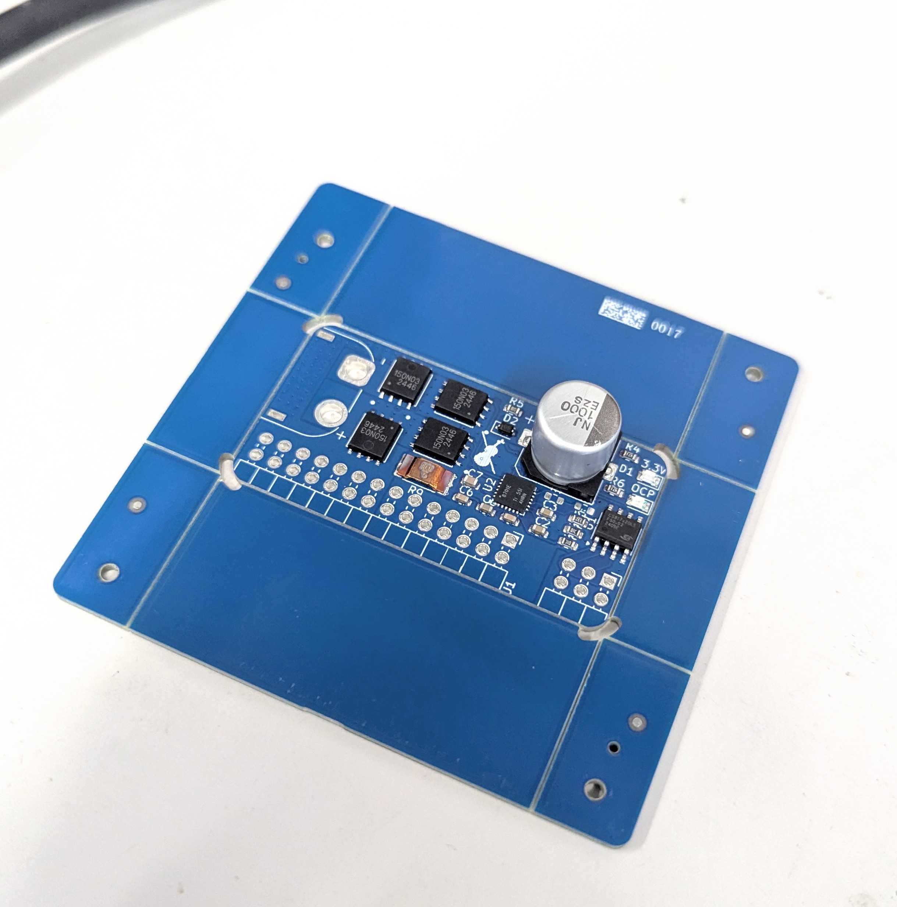
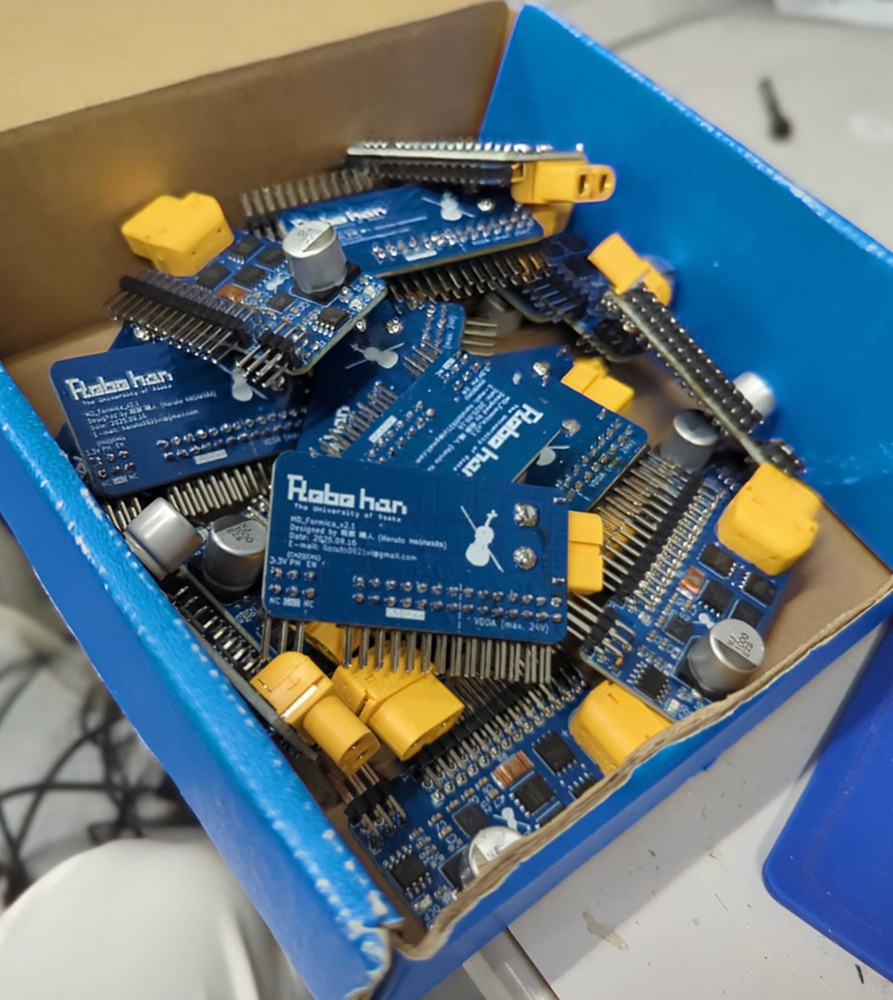
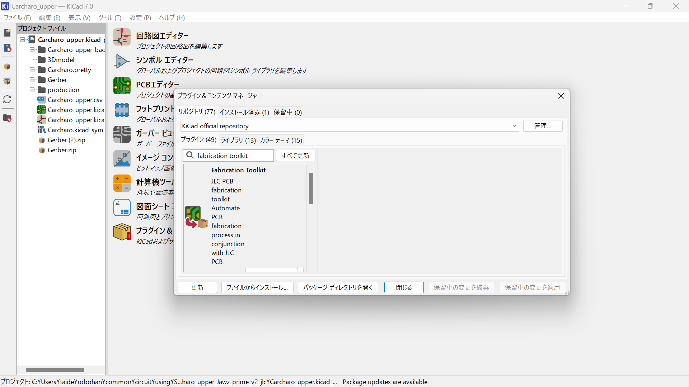
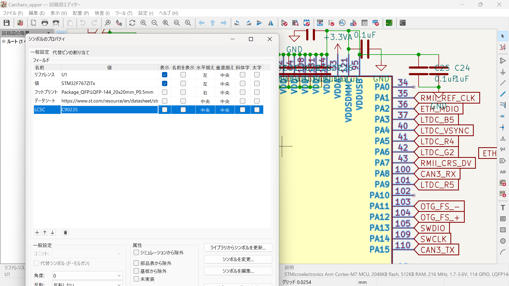
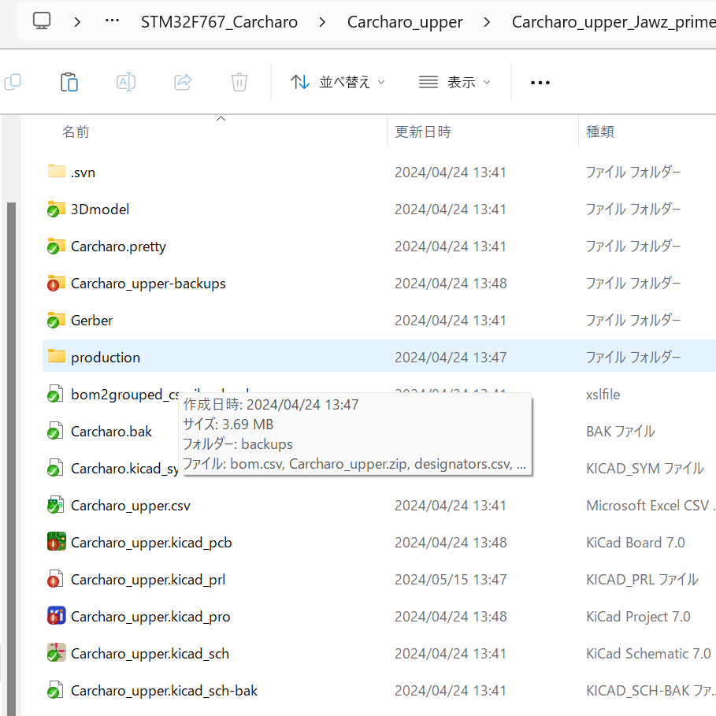
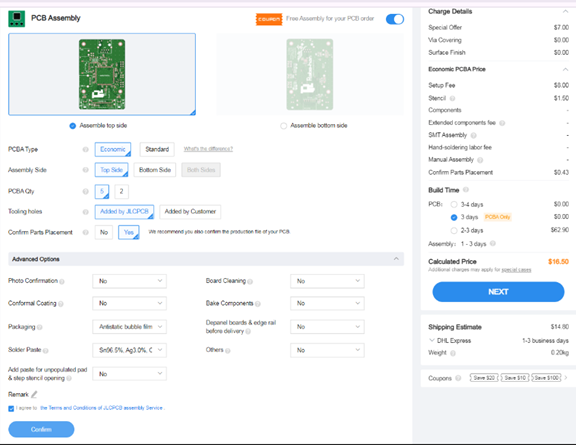
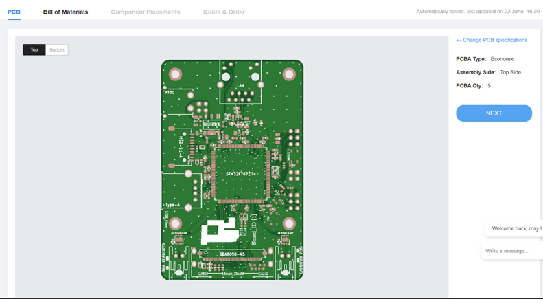
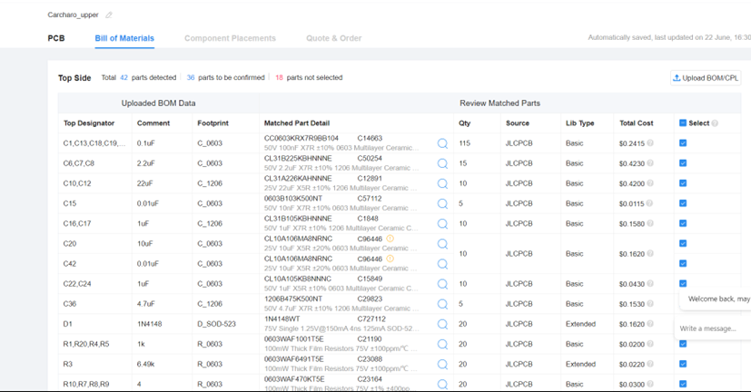

JLCPCB様よりブラシ付きMDの増産のご支援をいただきました!
先日，関西夏ロボコン2025が開催されました．全体3位と，技術アイデア賞をいただきました．部員一同いっそう活動に励んでまいります．
さて，Robohanでは，関西夏ロボコン2025に向けて，JLCPCB様より，基板製作費のご支援をいただきました．本当にありがとうございます！
※この記事には，一部宣伝・広告に類する内容が含まれております．
関西夏ロボコン2025に向けてご支援をいただきました
今回製作した基板とその説明
今回，JLCPCB様のご支援を受けて製作した基板は，次の基板です．
- ブラシ付きMD:MD_Formica_v2.1
それぞれの基板について説明します．
ブラシ付きMD:MD_Formica_v2.1
Robohanでは，ロボットの駆動系にブラシ付きモータを使用しています．そのため，ブラシ付きモータを駆動するためのモータドライバが必要です．
JLCPCB様のご支援を受け，ブラシ付きMDについては後の代まで残せるものを開発することができ，現役でバリバリ活躍しています．
今回製作したMDは，前回のMDをベースに，長辺方向と，高さ方向に省サイズ化を施したものになります．
できあがったMDが以下の画像です．
 また，機能の詳細を以下にまとめます．
機能概要
- PWMとON信号により出力指令を受信し、モータを制御
- 対応制御方式:
- Signed Magnitude (SM)
- Locked Anti-Phase (LAP)
電流定格
- 瞬間最大電流: 160A
- 定常電流: 70A（制限あり）
主要部品
- デジタルアイソレーター: CS817x20HS
- ゲートドライバ: DRV8701E
- Nch-MOSFET: TPH1R403NL
Robohanの活動に対して精力的に支援してくださっているJLCPCB様に多大なる感謝申し上げます．
JLCPCB様でのPCBAの発注方法
発注方法はNHK2024でのご支援の記事と同じ内容です設定で時間がかかるものと思っていましたが、Kicadだとプラグインで簡単に出来ました。 私が今回発注に使用したファイルは以下の手順で生成しています。 （使用環境 Windows11 Kicad7）
- プラグイン導入
- 素子選択
- ファイル生成
- 基板データのアップロード
- PCBAのオプションを設定
- PCBAに関するデータをアップロード
- パーツの位置データの確認
- 最後に
プラグイン＆コンテンツ マネージャーから「Fabrication Toolkit」を選択してインストール
以下のURLから素子を選定し、Kicadの回路図シンボルのフィールドにLCSCという欄を追加して、値に選定した素子のコードを入力する。 「JLCPCBの素子リストURL」
＊LCSCという欄を作りコードを入力しなくても、ファイル生成時に抵抗やコンデンサ等だと予測して出力してくれるみたいですが、たまに違うことや、実装に値段がかかる素子の場合もあるので注意が必要です。

追加したプラグインのGenerateを選択。
→追加した素子のコードによって自動的に素子の位置情報などのファイルを勝手に生成してくれます。

上のようにディレクトリ直下にフォルダが生成されその中に発注に必要なファイルがすべて入っています。

ここからはJLCPCBの発注画面での操作です。通常の基板通り、Gerberデータとドリルデータのファイルをまとめたzipファイルをアップロードします。
→実はこのzipファイルも、先の手順で行った「production」のフォルダ下に生成されています。（設定とか忘れることがないので、とても楽ですね）
PCB Assemblyを有効にして、「実装面（Assembly Side）」、「実装する枚数（PCBA Qty）」、「実装後のズレの確認（Confirm Parts Placement）」に関して確認します。 （最後のはオプションなので、デフォルトでは無効になっていますが、ほぼ値段変わらないので、今回は有効にしています。）
上記の設定が終われば「Confirm」をクリックして実装する部品などのデータを上げていきます。
最初は先の選択内容に関して表示されているだけなので、問題がなければ「Next」を押してスルーします。

次に、「部品のデータ（BOM File）」と「部品の位置（CPL File）」を上げます。
→このデータに関しても「production」フォルダ下にそれぞれ「bom.csv」と「positions.csv」という形で生成されています。
データを上げた後はそのデータが正しいかの確認です。
基本的に先の、回路図での設定で上げた「LCSC」という欄に正しいコードを入れていれば問題はありません。
＊ 今回の方法では、「LCSCの欄がない」または、「LCSCの欄が無入力」の場合には、プラグインが素子を推測して、先のcsvファイルを生成することがあります。 その場合には、右側の「Select」のチェックを外すか、「Matched Part Detail」の検索ボタンで素子を変更することが出来ます。

最後に、先に確定させたパーツの位置データを確認します。
ここはしっかり確認しましょう。
フットプリントのデータは基本的に素子リストにある「Easy
EDAのライブラリ」を使用しない限り、向きが異なる場合が多々あります。
向きが異なる場合、素子は以下のように個別に向きを変更することが出来ます。
素子の数が多い場合は、フットプリントを作る段階で
・「Easy EDA」から「Kicad」用のデータに変換
・「Easy EDAのライブラリ」を参考に向きを調整
上のどちらかを行っていれば、一つ一つ変更する手間がなく、楽にこのステップを終えることが出来ます。
以上でPCBAまでの設定が終わり、カートに入っていると思います。 あとは「配送方法」や「支払方法」を選択して発注をかけましょう。
プラグインを使用することで、「基板を初めて発注する方」、「PCBAを利用しない方」も含めて、ボタン一つで必要なファイルがすべて生成され、とても簡単に発注が行えると思います。
この記事が、基板を発注する手助けになれば幸いです。
新規スポンサー様募集中！
Robohanの活動を応援していただけるスポンサー様を募集しております.
資金提供(一口2000円から)のほか，技術提供や物資の現物提供などの形での支援も募集しております．
下のお問い合わせからご連絡ください．